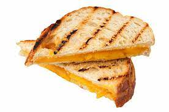

Grilled Cheese

Description
Grilled cheese is a simple dish made by adding cheese to any type of bread and melting it.
It is a tasty food which can be made easily.
Ingredients
- Any bread you want.
- Mozzarella and vintage cheddar cheese
- Salted butter
Steps
- Grate the cheese with a grater
- Butter both side of bread (all 4 side)
- Place the bread into the pan and heat it slowly for a min
- Flip the bread and add the cheese and place the other piece of bread on top
- Grill it for 3 min and the turn the sandwich and grill other side for 3 min
- take it out of the pan and cut it and enjoy your sandwich